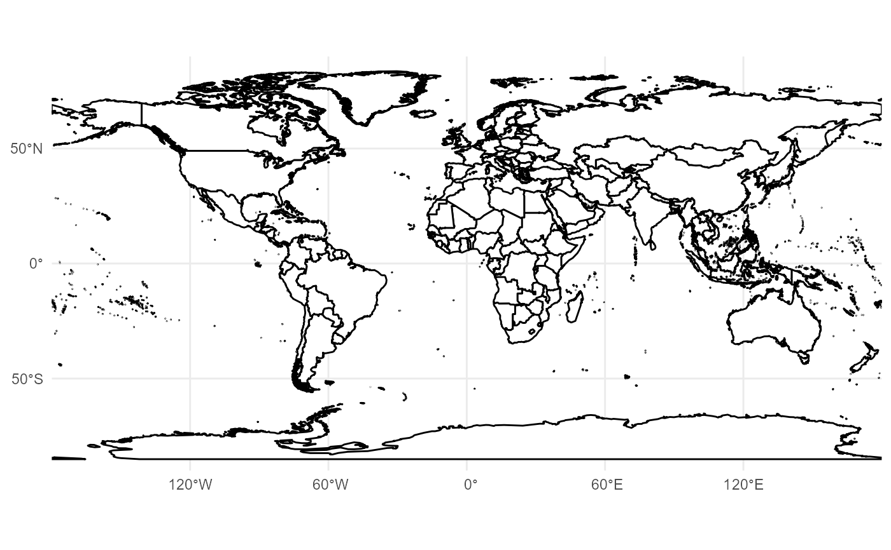

Coordinate System with Geographic Limits Automatically Transformed to a Projection
Source:R/coord_proj.R
coord_proj.Rd`coord_proj()` extends [ggplot2::coord_sf()] by allowing users to specify map limits (`xlim`, `ylim`) in geographic coordinates (longitude/latitude, WGS84). These limits are automatically transformed into the target projected CRS, ensuring that maps display the intended region correctly under any projection.
Usage
coord_proj(
crs = NULL,
xlim = NULL,
ylim = NULL,
expand = TRUE,
default_crs = "EPSG:4326",
...
)Arguments
- crs
Character string or object specifying the output coordinate reference system (e.g., `"EPSG:3857"`, `"+proj=robin"`, or an `sf::crs` object). **Required**.
- xlim
Numeric vector of length 2. Longitude limits in degrees (WGS84).
- ylim
Numeric vector of length 2. Latitude limits in degrees (WGS84).
- expand
Logical. Passed to [ggplot2::coord_sf()]. Default is `TRUE`.
- default_crs
Character or object. The CRS of the input `xlim` and `ylim`. Default is `"EPSG:4326"` (WGS84).
- ...
Additional arguments passed to [ggplot2::coord_sf()].
Value
A `CoordSf` object (specifically a result of `coord_sf()`) with automatically transformed limits.
Details
This wrapper is particularly useful because [ggplot2::coord_sf()] interprets `xlim` and `ylim` as *projected* coordinates (in the units of the target CRS). Passing longitude/latitude directly to `coord_sf()` results in incorrect map extents unless the output CRS is also WGS84.
`coord_proj()` provides a safe, projection-aware workflow that calculates the bounding box in WGS84, transforms it to the target CRS, and passes the new limits to `coord_sf()`.
See also
* [ggplot2::coord_sf()] for the underlying function. * [geom_world()] for the basemap layer.
Examples
library(ggplot2)
# \donttest{
# Example 1: China (AEQD projection) with geographic limits
china_proj <- "+proj=aeqd +lat_0=35 +lon_0=105 +ellps=WGS84 +units=m +no_defs"
ggplot() +
geom_world(crs = china_proj) +
coord_proj(
crs = china_proj,
xlim = c(60, 140),
ylim = c(-10, 50)
) +
theme_minimal()

# Example 2: Zooming into a specific region
# Even though the map is projected (Robinson), we specify limits in Lat/Lon
crs_robin <- "+proj=robin +lon_0=0 +datum=WGS84"
ggplot() +
geom_world(crs = crs_robin) +
coord_proj(
crs = crs_robin,
xlim = c(-20, 50), # Focus on Africa/Europe
ylim = c(-40, 40)
) +
theme_minimal()
# }